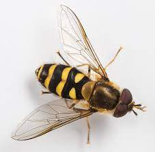

The Blue Ridge Parkway Syrphid Fly Inventory is part of a larger pollinator survey with the goal of documenting all species of pollinators harbored by the parkway. Although most of the buzz surrounds bees, syrphid flies are thought to be equally important pollinators of native plants. Despite their percieved importance, studies focused on Syrphid Flies are relatively scarce. Before 2019, there were no official records of any syrphid flies along the Blue Ridge Parkway, a unit of the National Parks System.
It is difficult to protect what one does not know they have, and to that end a novel study was begun to explore the diversity of syrphid flies along the parkway. Specimens were collected at over 60 sites along the parkway and have currently yielded nearly 70 species of syrphid fly.
Hover over a point to see the species living there!

Map authored by PJ Coleman